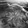

Skip to content
This repository
Explore
Gist
Blog
Help

anabranch
New repository
New organization
This repository
New issue
New collaborator
1
Unwatch
Notifications
Not watching
Be notified when participating or @mentioned.
Watch
Watching
Be notified of all conversations.
Unwatch
Ignoring
Never be notified.
Stop ignoring
Unstar
0
Star
0
Fork
0
anabranch
/
anabranch.github.io
Code
Issues
0
Pull Requests
0
Wiki
Pulse
Graphs
Settings
HTTPS
clone URL
SSH
clone URL
Subversion
checkout URL
You can clone with
HTTPS
,
SSH
, or
Subversion
.
Clone in Desktop
Download ZIP
Permalink
tree:
e8a20df82c
Switch branches/tags
Branches
Tags
master
Create branch:
from ‘e8a20df’
Nothing to show
anabranch.github.io
/
CNAME
anabranch
on Oct 5
Update to Bill Chambers.me
1
contributor
Users who have contributed to this file
anabranch
1 lines (1 sloc)
0.015 kb
Raw
Blame
History
billchambers.me
Jump to Line
Go
Something went wrong with that request. Please try again.